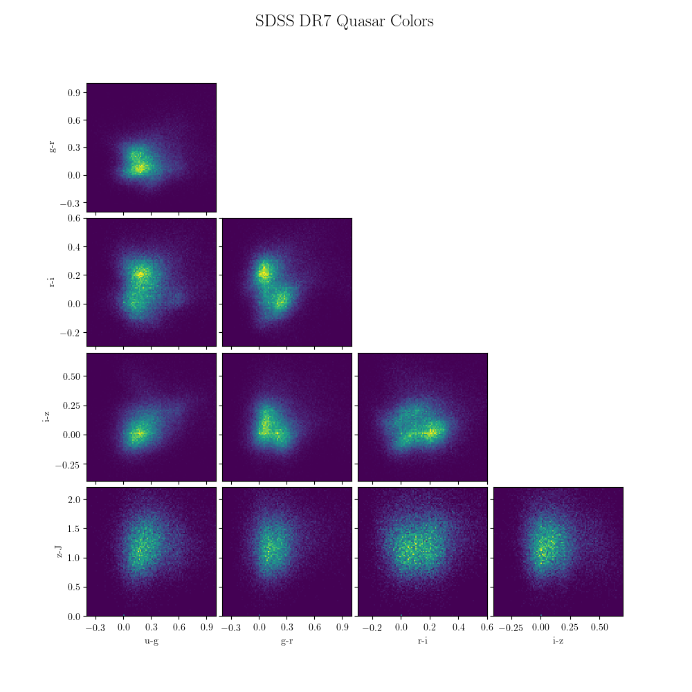

SDSS Data Release 7 Quasar catalog¶
This demonstrates how to fetch and visualize the colors from the SDSS DR7 quasar sample.
{kind=link}
# Author: Jake VanderPlas <vanderplas@astro.washington.edu>
# License: BSD
# The figure is an example from astroML: see http://astroML.github.com
import numpy as np
from matplotlib import pyplot as plt
from astroML.plotting import MultiAxes
from astroML.datasets import fetch_dr7_quasar
data = fetch_dr7_quasar()
colors = np.empty((len(data), 5))
colors[:, 0] = data['mag_u'] - data['mag_g']
colors[:, 1] = data['mag_g'] - data['mag_r']
colors[:, 2] = data['mag_r'] - data['mag_i']
colors[:, 3] = data['mag_i'] - data['mag_z']
colors[:, 4] = data['mag_z'] - data['mag_J']
labels = ['u-g', 'g-r', 'r-i', 'i-z', 'z-J']
bins = [np.linspace(-0.4, 1.0, 100),
np.linspace(-0.4, 1.0, 100),
np.linspace(-0.3, 0.6, 100),
np.linspace(-0.4, 0.7, 100),
np.linspace(0, 2.2, 100)]
ax = MultiAxes(5, wspace=0.05, hspace=0.05,
fig=plt.figure(figsize=(10, 10)))
ax.density(colors, bins)
ax.set_labels(labels)
ax.set_locators(plt.MaxNLocator(5))
plt.suptitle('SDSS DR7 Quasar Colors', fontsize=18)
plt.show()